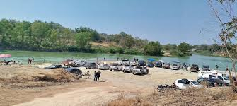
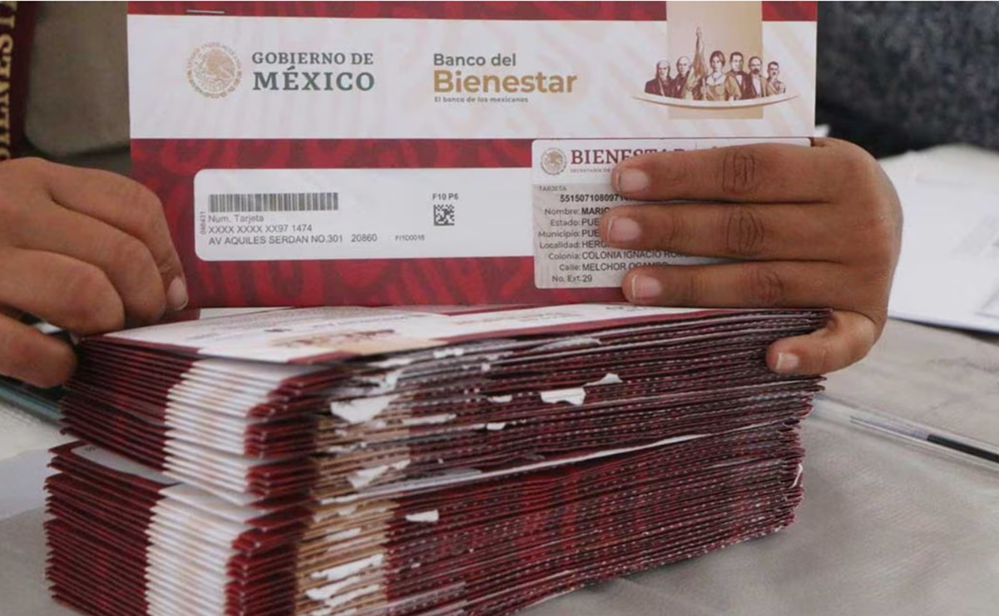

Vacaciones de Semana Santa: Disfruta con Precaución
Yoss Inf 11 de abril de 2025
Las vacaciones de Semana Santa han llegado, y con ellas la oportunidad perfecta para disfrutar de momentos inolvidables en familia.
Sin embargo, es fundamental recordar la importancia de la seguridad durante estos días de descanso. Maneja con precaución y mantén
siempre la atención en la carretera. Recuerda que, en el camino, ¡mejor tarde que nunca! Planifica tus viajes con anticipación y
asegúrate de que cada miembro de la familia esté seguro. Estas vacaciones, prioriza la diversión sin descuidar la seguridad.

Los Alameños de la Sierra Arrasan en la Fenahuap
Yorch Hdz 12 de abril de 2025
La Fenahuap se llenó de energía con la presentación de Los Alameños de la Sierra en el “Teatro del Pueblo”, donde no cabía nadie más.
Fans de toda la Huasteca se reunieron para disfrutar de un ambiente alocado y festivo. Desde el primer acorde, los amantes de los bailes
aprovecharon cada canción, creando una atmósfera vibrante que hizo de esta noche un evento inolvidable. Sin duda, la agrupación dejó una
huella profunda en el corazón de sus seguidores.
Recuerda estar pendiente al pago de la beca
Jzl Cast 16 de abril de 2025
Es crucial que los beneficiarios de la Beca Benito Juárez estén atentos al pago correspondiente para el nivel superior. Se recomienda
monitorear regularmente la página oficial de las becas, donde se anunciarán los depósitos. Mantente informado para asegurar que recibas tu
apoyo económico a tiempo y no pierdas la oportunidad de continuar con tus estudios.
Chalanazo 2025: Diversión y Baile Este Domingo
Jzl Cast 20 de abril de 2025
Hoy, domingo 20 de abril, se llevará a cabo el Chalanazo 2025, comenzando con un concurso de pesca por la tarde. Después, los asistentes podrán
disfrutar de un chapuzón en el río. La jornada culminará con un baile de 6 p.m. a 10 p.m., donde los amantes del baile se reunirán para disfrutar
de una noche llena de música y diversión. ¡No te lo pierdas!

Estudiantes de nuevo ingreso, estar pendientes a la entrega de tarjetas!
Jzl Cast 22 de abril de 2025
Los estudiantes de nuevo ingreso de la UICSPL deben estar atentos a la entrega de tarjetas de becas. Esta información se podrá consultar a través
de la plataforma del buscador de becas o en SUBES. Es importante mantenerse informado para asegurar el acceso a este apoyo económico y facilitar
su trayectoria académica.

Se terminaron las vacaciones
Jzl Cast 27 de abril de 2025
Las vacaciones de Semana Santa han llegado a su fin, y es momento de prepararse para el regreso a clases. Los estudiantes deben alistar nuevamente
sus mochilas, sacar punta a sus lápices y asegurarse de dormir temprano para estar listos para el primer día de clases el 28 de abril. Con la mente
fresca y renovada, es hora de retomar el camino académico y aprovechar al máximo el resto del ciclo escolar. ¡Buena suerte a todos en este regreso!.